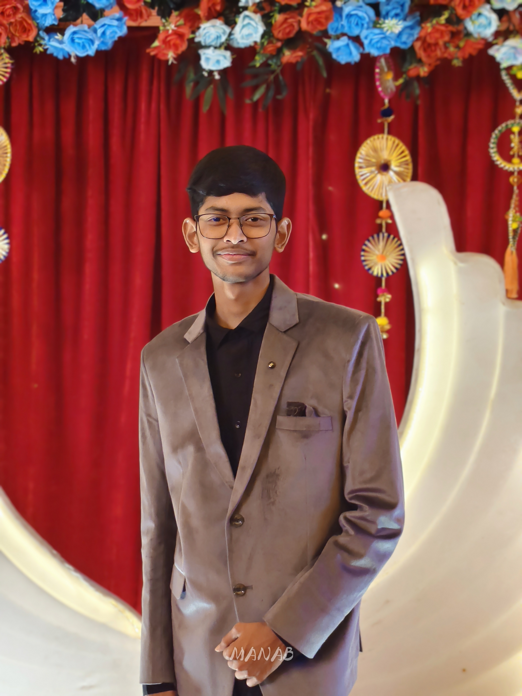

Aspiring Computer Science Student bridging the gap between technology and education. I am passionate in coding, web development, digital creativity, and building AI-driven educational tools.

I am a passionate student in the Science stream with a strong interest in computer science, digital creativity, and logical learning. I enjoy working on technology-related projects, designing creative content, and collaborating with other students.
With a passion for bridging the gap between technology and education, I founded the Students' Progress Network (SPN EdTech) to provide digital resources and guidance. My expertise lies in coding, web development and content creation, having built multiple platforms ranging from test, scholarship portals to digital resource shop and admission guides.
I thrive at the intersection of technical problem-solving and community leadership, and I am eager to leverage my upcoming engineering journey to build impactful AI-driven tools.
Founder
A student-led initiative focused on academic development, cultural activities, digital magazine creation, and peer collaboration among students.
Founder
A personal platform exploring technology and digital creativity. Includes cinematography, professional video/photo editing, websites, and self-learning projects.
Former FTCA Educator
Experience in teaching basic computer concepts, applied logic, and formatting digital content to junior students.
A comprehensive educational platform providing scholarship portals, admission guides, and digital resources for student success.
Innovation hub for cinematography, professional video/photo editing, and technical creative services built from the ground up.
Karimpur Jagannath High School (H.S.)
Science Stream
Karimpur Sudha Smriti Sishu Niketan